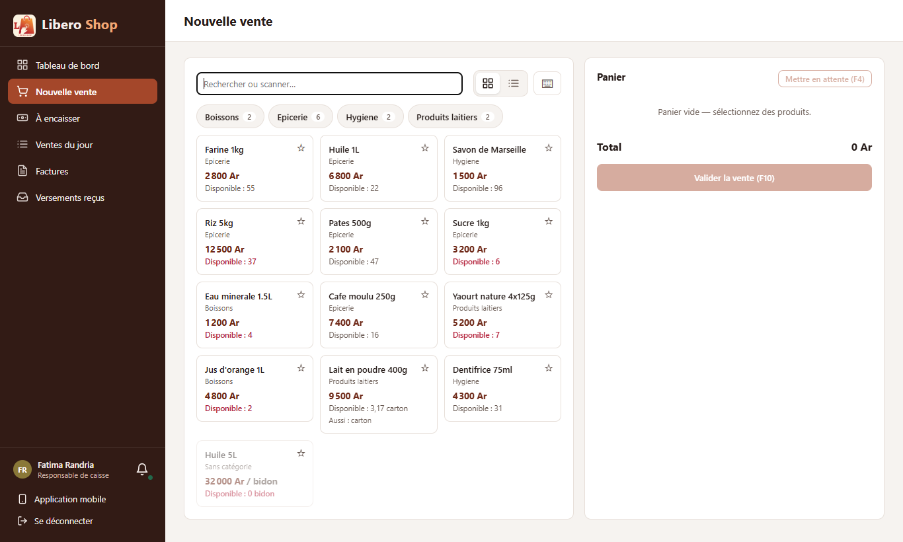
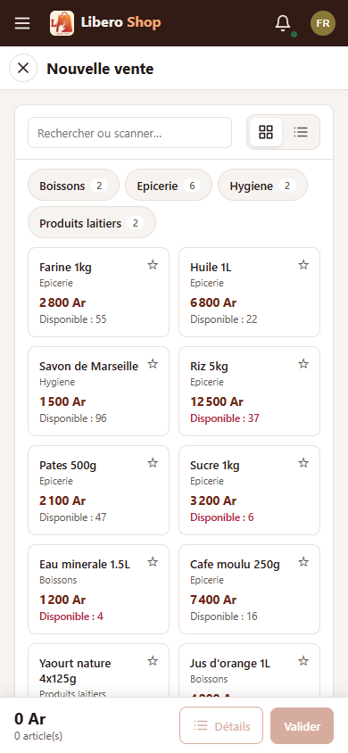

← Tous les comptes rendus de l'interface
UI-89Vente : rayons en barre compacte
Résumé
- Sur la page de vente (vue en tuiles), les rayons ne sont plus de grandes tuiles mais une ligne de boutons au-dessus des produits : « Boissons 2 », « Épicerie 6 »…
- Les premiers produits sont visibles tout de suite, au lieu de deux rangées de rayons d'abord.
- Sur téléphone, la ligne passe à la ligne au lieu de défiler de côté.
- Les favoris sont un bouton de plus en tête de ligne ; l'étoile d'un rayon reste dans le chemin « Tous › Épicerie », une fois dedans.
1. Ce qui a été fait
Figure 1 — Les rayons passent d'une grille de tuiles à une ligne de boutons ; les produits remontent.
Chaque bouton porte le nom du rayon et le nombre de produits qu'il contient, sous-rayons compris. Un appui ouvre le rayon comme avant ; à l'intérieur, ses sous-rayons s'affichent de la même façon. La vue en liste et l'écran de prise de commande n'ont pas changé.
2. Le résultat en images
Fatima — caisse

Figure 2 — Sur ordinateur : une ligne de rayons, puis tout de suite les produits.

Figure 3 — Sur téléphone : la ligne passe à la ligne, sans défilement de côté.
3. Tableau récapitulatif
| Fichier | Changement |
|---|---|
ui/…/shared/components/catalog-grid.component.ts | rayons et favoris en ligne de boutons au-dessus de la grille |
Tests : interface au vert (327 tests), vérification visuelle à deux largeurs. Aucun changement côté serveur.
Signalé, hors de ce point : l'écran de prise de commande (order-taking.component.ts) affiche encore les
rayons en tuiles ; il pourrait suivre la même présentation.